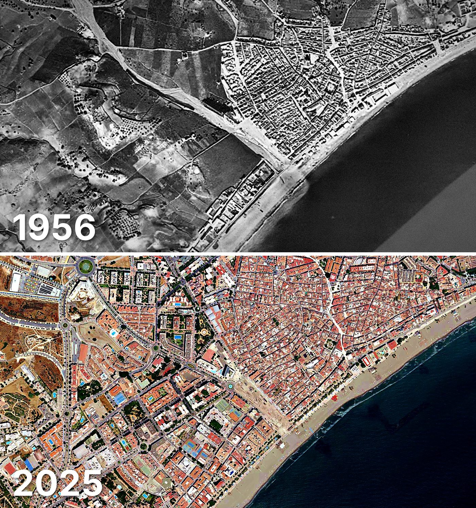

Estepona
Estepona tiene 8.375 edificios y 51.649 viviendas, y 79.621 habitantes en 2025. La mitad de sus edificios es de 1984 o posterior.
Cuándo se construyeron sus edificios
Desde 2015 se han terminado 448 edificios. 2 edificios son anteriores a 1900.

Las calles de Estepona con más viviendas
- Avenida España · 1.118 viviendas
- Avenida del Carmen · 993 viviendas
- Calle Trajano · 791 viviendas
- Avenida Puerta del Mar · 772 viviendas
- Avenida Juan Carlos I · 768 viviendas
- Avenida Andalucía · 754 viviendas
- Avenida de los Reales · 587 viviendas
- Avenida Reina Sofía · 463 viviendas
- Avenida la Resina · 386 viviendas
Todas las calles de Estepona (546) →
Toda la información de Estepona en CASAS.ES →
Fotos de Estepona para publicar
Estas fotos aéreas de Estepona, de 1956 y de 2025, se pueden publicar gratis en un periódico, un blog, la web del ayuntamiento o las redes, citando la fuente como se indica debajo.

Descargar: las dos juntas · 1956 · 2025 (JPG, 1.400 px de ancho)


Texto listo para publicar
Estepona desde el aire: así era en 1956 y así es en 2025
Las dos fotos muestran el mismo encuadre de Estepona con 69 años de diferencia: arriba, el Vuelo Americano de 1956; abajo, la foto aérea del PNOA de julio de 2025. Hoy Estepona tiene 8.375 edificios y 51.649 viviendas, y 79.621 habitantes en 2025. La mitad de sus edificios es de 1984 o posterior. El 22 % de sus edificios se ha levantado desde el año 2000.
Más datos de Estepona en CASAS.ES: casas.es/malaga/estepona
Cita para copiar
Fotos: Vuelo Americano Serie B (1956-57) y PNOA 2025, cedidos por © Instituto Geográfico Nacional (CC BY 4.0, scne.es). Datos y composición: <a href="https://casas.es/malaga/estepona/">los datos de Estepona en CASAS.ES</a>Descarga: municipios (CSV) · calles (CSV) · Wikidata (Q492748) · cómo usarlos en Python (dev.to) · también en OSF, Figshare, B2SHARE y Mendeley Data